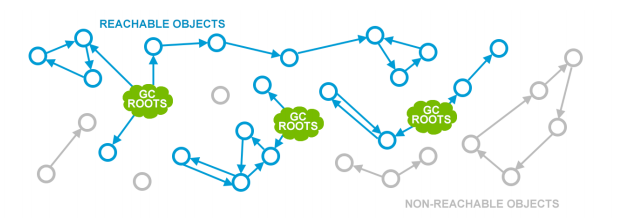
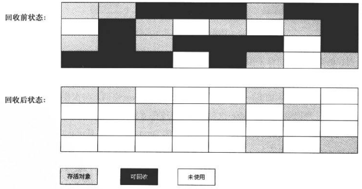
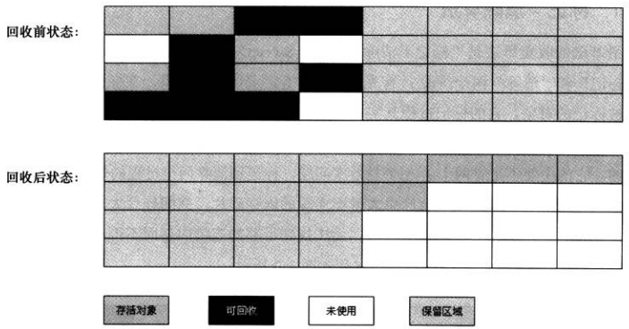
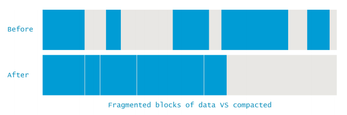
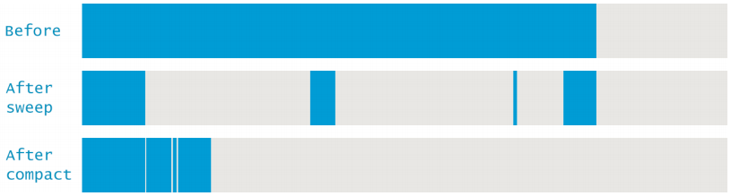

Java与C++之间有一堵由内存动态分配和垃圾收集技术所围成的“高墙”，墙外面的人想进去，墙里面的人想出来。
概述
垃圾收集（Garbage Collection，GC）需要完成的三件事情：
- 哪些内存需要回收？
-[] 内存区域-回收条件 - 什么时候回收？
-[] 多线程/安全点 - 如何回收？
-[] 回收算法
当要排查各种内存溢出、内存泄漏问题时，当垃圾收集称为系统达到更高并发量的瓶颈时，我们就需要对这些”自动化”的技术实施必要的监控和调节。
程序计数器、虚拟机栈、本地方法栈3个区域随线程而生，随线程而灭；每一个栈帧中分配多少内存基本上在类结构确定下来的时候就已知。因此这几个区域的内存分配和回收都具有确定性，不需过多考虑回收问题，方法结束或者线程结束时，内存自然就随之回收了。Java堆和方法区则不一样，一个接口中的多个实现类需要的内存可能不一样，一个方法中的多个分支需要的内存也可能不一样，只有在程序处于运行期间才知道会创建哪些对象，这部分内存的分配和回收都是动态的，垃圾收集器所关注的是这部分内存！
对象已死吗？
垃圾回收器在对堆进行回收前，首要确定的事情就是这些对象之间哪些还存活着，哪些已经死去？
引用计数算法
- 定义：引用计数算法（
Reference Counting）:给对象添加一个引用计数器，每当一个地方引用它时，计数器值就+1；当引用失效时，计数器值就-1；任何时刻计数器为0的对象就是不可能被再使用的； - 优点：实现简单，判定效率高；微软的COM技术、Python中都使用了Reference Couting算法进行内存管理；
- 缺点：由于其很难解决对象之间相互循环引用的问题，主流Java虚拟机里面都没有选用Refrence Couting算法来管理内存；
可达性分析算法
- 定义：可达性分析（
Reachability Analysis）判断对象存活的基本思路：通过一系列的称为GC Roots的对象作为起始点，从这些节点开始向下搜索，搜索所走过的路径称为引用链（Reference Chain）,当一个对象到GC Roots没有任何引用链相连（即GC Roots到这个对象不可达）时，则证明此对象是不可用的；
 - Java语言中，可作为GC Roots对象包括：
- 虚拟机栈（栈帧中的本地变量表）中引用的对象；
- 方法区中类静态属性引用的对象；
- 方法区中产量引用的对象；
- 本地方法栈中JNI（即一般的Native方法）引用的对象
再谈引用
JDk1.2之后，Java对引用概念进行了扩充，将引用分为强引用、软引用、弱引用、虚引用4种，4种强度一次逐渐减弱。
- 强引用（
Strong Reference）是指在程序代码之中普遍存在的，类似Object obj=new Object()这类的引用，只要强引用存在，对象就不会发生GC； - 软引用（
Soft Reference）是用来描述一些还有用但并非必须的对象。对于软引用关联着的对象，在系统将要发生OOM异常之前，将会把这些对象列进回收范围之中进行第二次回收，如果这次回收后还没有足够的内存，才会抛出OOM异常。 - 弱引用（
Weak Reference）是用来描述非必须对象的，强度比软引用更弱，被弱引用关联的对象只能生存到下一次GC发生之前。当垃圾回收器工作时，无论当前内存是否足够，都会回收掉只被弱引用关联的对象。 - 虚引用（
Phantom Reference）也称为幽灵引用或者幻影引用，它是最弱的一种引用关系。一个对象是否有虚引用的存在，完全不会对其生存时间构成影响，也无法通过虚引用来取得一个对象实例。为一个对象设置虚引用关联的唯一目的就是能在这个对象被收集器回收时收到一个系统通知。
回收方法区
- 在方法区中进行垃圾收集的性价比一般比较低；而在Heap中，尤其是在新生代，常规应用进行一次垃圾收集一般回收70%~95%的空间，而永久代的垃圾收集效率远低于此；
- 永久代的垃圾收集主要回收两部分内容：废弃常量和无用的类；
- 回收废弃常量与回收Java堆中的对象类似；
- 判定一个类是否是无用的类条件相对苛刻：
- 该类所有实例都已被回收，即Java堆中不存在该类的任何实例；
- 加载该类的
ClassLoader已经被回收； - 该类对应的
java.lang.Class对象没有在任何地方被引用，无法在任何地方通过反射访问该方法。
在大量使用反射、动态代理、CGLib等ByteCode框架、动态生成JSP以及OSGi这类自定义ClassLoader的场景都需要虚拟机具备类卸载的功能，以保证永久代不会溢出。
垃圾收集算法
只介绍内存回收的方法论（算法思想及发展过程），不讨论具体算法实现。
标记-清除算法（Mak-Sweep）
- 定义：MS算法分标记和清除两个阶段：首先标记出所有需要回收的对象，在标记完成后统一回收所有被标记的对象。
 - 两点不足：
- 效率问题，标记和清除两个过程的效率都不高；
- 空间问题，标记清除之后会产生大量不连续的内存碎片，空间碎片太多后导致以后程序运行过程中需要分配较大对象时，无法找到足够的连续内存而不得不提前出发一次垃圾收集动作；
复制算法（Coping）
- 定义：Coping算法将可用内存按容量划分为大小相等的两块，每次使用其中一块。当这一块的内存用完了，就将还存活的对象复制到另一块上面，然后再把已使用的内存清理掉。
 - 优点：每次对整个半区进行回收，内存分配时不用考虑内存碎片等复杂情况，只要移动堆顶指针，按顺序分配内存即可，实现简单，运行高效；
- 不足：提高效率的代价是将内存缩小到原来的一半；
现代商业虚拟机都采用这种收集算法来回收新生代，但新生代中的对象一般98%是朝生夕死，无需按照1:1比例来划分内存空间，而是将内存分为1块较大的Eden（伊甸园）空间和2块较小的Survivor（幸存者）空间，每次使用Eden和其中1块Survivor。 - 回收时，将Eden和Survivor中还存活的对象一次性复制到另外一个Survivor空间中，最后清理掉Eden和刚才用过的Survivor空间。
- HotSpot VM默认Eden和Survivor的比例是8:1:1，即只浪费10%的内存。
- 98%的对象可回收只是一般场景下的数据，无法保证每次回收都只有不多于10%的对象存活，所以当Survivor空间不足时，需要依赖其他内存（老年代）进行
分配担保（Handle Promotion），让对象进入老年代。
标记-整理算法（Mark-Compact）
- 出场背景：复制算法在对象存活率较高时复制操作较多，效率会变低。更关键的是，如果不想浪费50%的空间，就需要有额外的空间进行分配担保，以对应被使用内存中的所有对象都100%存活的极端情况，所以老年代一般不直接选用这种算法。
- 定义：根据老年代的特点，提出标记-整理（Mark-Compact）算法，标记过程仍然与
标记-清除算法一样，但后续步骤不是直接对可回收对象进行清理，而是让所有存活的对象都向一端移动，然后直接清理调用端边界以外的内存。
- 内存碎片整理
 - 标记-清除算法 vs 标记-整理算法

分代收集算法
当前商业虚拟机的垃圾收集都采用分代收集(Generational Collection)算法，根据对象存活周期的不同将内存分为几块。
- 一般把Java堆分为新生代和老年代，这样就可以根据各个年代的特点采用最适当的收集算法；
- 新生代每次垃圾回收时都发现有大批对象死去,只有
少量对象存活，故采用复制算法，以少量对象复制的成本即可完成收集； - 老年代中因为
对象存活率高、没有额外空间对其进行分配担保，必须采用标记-清理或标记-整理算法来进行回收。
HotSpot的算法实现
HotSpot虚拟机上实现对象存活判断算法和垃圾收集算法时，必须对算法的执行效率有严格的考量，才能保证虚拟机高效运行。
枚举根基点（GC Roots）
- 可作为GC Roots的节点主要在全局性的引用（如常量或静态变量）与执行上下文（如栈帧中的本地变量表）中；
- 可达性分析对执行时间的敏感体还现在GC停顿上，因为这项分析工作必须在一个能确保一致性的快照中进行（即对象引用关系在某个时间点冻结），这点是导致GC必须停顿所有Java执行线程
（Stop The World）的一个重要原因，即使号称不会发生停顿的CMS收集器中，GC Roots也是必须要停顿的。 准确式内存管理（Exact Memory Management）,即虚拟机可以知道内存中某个位置的数据具体是什么类型。- HotSpot VM采用
OopMap(oop,Ordinary Object Pointer,普通对象指针)数据结构，在类加载完成的时候，将对象内什么偏移量上是什么类型的数据计算出来，在JIT(Just-In-Time Compiler)编译过程中，也会在特定的位置（Safepoint）记录下栈和寄存器中哪些位置是引用。
安全点（Safepoint）
- 关于OopMap
- 在OopMap的协助下，HotSpot可以快速且准确地完成GC Roots枚举，但是可能会导致引用关系变化；
- OopMap内容变化的指令非常多，如果为每一条指令都生成对应的OopMap，将会需要大量的额外空间，这样GC的空间成本将会变得很高。
- 安全点定义
HotSpot没有为每条指令都生成OopMap，只是在特定的位置记录了这些信息，这些位置称为安全点(Sapfepoint)，即程序执行时并非在所有地方都能停顿下来开始GC，只有在到达安全点时才能暂停。 - 安全点的选定
- 安全点的选定既不能太少以至于让GC等待时间太长，也不能过于频繁以至于过分增大运行时的负荷。
- 安全点的选定基本上是以程序
是否具有让程序长时间执行的特性为标准选定的，长时间执行的最明显特性就是指令序列复用，如方法调用、循环跳转、异常跳转等，所以具有这些功能的指令才会产生Safepoint。
- 如何在GC发生时让所有线程（这里不包括执行JNI调用的线程）都跑到最近的安全点上再停顿下来，有两张方案可供选择：
抢先式中断（Preemptive Suspension）：不需要线程的执行代码主动去配合，在GC发生时，首先把所有线程全部中断，如果发现有线程中断的地方不在安全点上，就恢复线程，让它跑到安全点。
现在几乎没有虚拟机实现采用抢先式中断来暂停线程从而响应GC事件。主动式中断（Voluntary Suspension）：当GC需要中断线程的时候，不直接对线程进行操作，仅仅简单的设置一个标志，各个线程执行时主动去轮询这个标志，发现中断标志为真时就自己中断挂起（VM将内存页设置为不可读，线程会产生自陷异常，在预先注册异常处理器中暂停线程实现等待），轮询标志的地方和安全点是重合的。
安全区域（Safe Region）
- 安全区域产生背景
Safepoint机制保证了程序执行时，在不太长时间内就会遇到可进入GC的Safepoint；但是当程序不执行（没有CPU分配时间）的时候（如线程出于Sleep状态或者Block状态），这时线程无法响应JVM的中断请求，走到安全的地方中断挂起，JVM也不可能等待线程重新分配CPU时间。对于这种情况，就需要安全区域（Safe Region）来解决。 - 安全区域定义
安全区域是指在一段代码片中，引用关系不会发生变化。在这个区域中的任意地方开始GC都是安全的。可以将Safe Region看作被扩展了的Safepoint。 - 工作原理
执行函数在进入安全区域时设置ready flag。在它离开安全区域以前，它先检查GC是否完成了枚举（或者收集），并且不再需要执行函数呆在阻塞状态。如果是真，它就向前执行，离开安全区域； 否则，它就像安全点一样阻塞他自己。
垃圾收集器
介绍垃圾收集器之前，需要明确一点，就是在新生代采用的停止复制算法中，“停 止（Stop-the-world）”的意义是在回收内存时，需要暂停其他所 有线程的执行。这个是很低效的，现在的各种新生代收集器越来越优化这一点，但仍然只是将停止的时间变短，并未彻底取消停止。
Serial收集器
- 新生代收集器，使用停止复制算法，使用一个线程进行GC，串行，其它工作线程暂停。
- 使用-XX:+UseSerialGC可以使用Serial+Serial Old模式运行进行内存回收（这也是虚拟机在Client模式下运行的默认值）
ParNew收集器（Parallel New）
- 新生代收集器，使用停止复制算法，Serial收集器的多线程版，用多个线程进行GC，并行，其它工作线程暂停，关注缩短垃圾收集时间。
- 使用-XX:+UseParNewGC开关来控制使用ParNew+Serial Old收集器组合收集内存；使用-XX:ParallelGCThreads来设置执行内存回收的线程数。
Parallel Scavenge收集器
新生代收集器，使用停止复制算法，关注CPU吞吐量，即运行用户代码的时间/总时间，
比如：JVM运行100分钟，其中运行用户代码99分钟，垃圾收集1分钟，则吞吐量是99%，这种收集器能最高效率的利用CPU，适合运行后台运算（关注缩短垃圾收集时间的收集器，如CMS，等待时间很少，所以适 合用户交互，提高用户体验）。
- 使用-XX:+UseParallelGC开关控制使用Parallel Scavenge+Serial Old收集器组合回收垃圾（这也是在Server模式下的默认值）；
- 使用-XX:GCTimeRatio来设置用户执行时间占总时间的比例，默认99，即1%的时间用来进行垃圾回收。
- 使用-XX:MaxGCPauseMillis设置GC的最大停顿时间（这个参数只对Parallel Scavenge有效），
- 用开关参数-XX:+UseAdaptiveSizePolicy可以进行动态控制，如自动调整Eden/Survivor比例，老年代对象年龄，新生代大小等，这个参数在ParNew下没有。
Serial Old收集器
- 老年代收集器，单线程收集器，串行，
- 使用标记整理（整理的方法是Sweep（清理）和Compact（压缩），清理是将废弃的对象干掉，只留幸存的对象，压缩是将移动对象，将空间填满保证内存分为2块，一块全是对象，一块空闲）算法，
- 使用单线程进行GC，其它工作线程暂停（注意，在老年代中进行标记整理算法清理，也需要暂停其它线程），
- 在JDK1.5之前，Serial Old收集器与ParallelScavenge搭配使用。
Parallel Old收集器
- 老年代收集器，多线程，并行，多线程机制与Parallel Scavenge差不错，
- 使用标记整理（与Serial Old不同，这里的整理是Summary（汇总）和Compact（压缩），汇总的意思就是将幸存的对象复制到预先准备好的区域，而不是像Sweep（清理）那样清理废弃的对象）算法，
- 在Parallel Old执行时，仍然需要暂停其它线程。
- Parallel Old在多核计算中很有用。
- Parallel Old出现后（JDK 1.6），与Parallel Scavenge配合有很好的效果，充分体现Parallel Scavenge收集器吞吐量优先的效果。
- 使用-XX:+UseParallelOldGC开关控制使用Parallel Scavenge +Parallel Old组合收集器进行收集。
CMS收集器（Concurrent Mark Sweep）
- 老年代收集器，致力于获取最短回收停顿时间（即缩短垃圾回收的时间），使用标记清除算法，多线程，优点是并发收集（用户线程可以和GC线程同时工作），停顿小。
- 使用-XX:+UseConcMarkSweepGC进行ParNew+CMS+Serial Old进行内存回收，
- 优先使用ParNew+CMS，当用户线程内存不足时，采用备用方案Serial Old收集。
- CMS收集的执行过程是：初始标记(CMS-initial-mark) -> 并发标记(CMS-concurrent-mark) —>预清理(CMS-concurrent-preclean)—>可控预清理(CMS-concurrent-abortable-preclean)-> 重新标记(CMS-remark) -> 并发清除(CMS-concurrent-sweep) ->并发重设状态等待下次CMS的触发(CMS-concurrent-reset)
- 在CMS清理过程中，只有初始标记和重新标记需要短暂停顿，并发标记和并发清除都不需要暂停用户线程，因此效率很高，很适合高交互的场合。
- CMS也有缺点，它需要消耗额外的CPU和内存资源，在CPU和内存资源紧张，CPU较少时，会加重系统负担（CMS默认启动线程数为(CPU数量+3)/4）。
- 在并发收集过程中，用户线程仍然在运行，仍然产生内存垃圾，所以可能产生“浮动垃圾”，本次无法清理，只能下一次Full GC才清理，因此在GC期间，需要预留足够的内存给用户线程使用。
- 使用CMS的收集器并不是老年代满了才触发Full GC，而是在使用了一大半（默认68%，即2/3，使用-XX:CMSInitiatingOccupancyFraction来设置）的时候就要进行Full GC，如果用户线程消耗内存不是特别大，可以适当调高-XX:CMSInitiatingOccupancyFraction以降低GC次数，提高性能，如果预留的用户线程内存不够，则会触发Concurrent Mode Failure，此时，将触发备用方案：使用Serial Old 收集器进行收集，但这样停顿时间就长了，因此-XX:CMSInitiatingOccupancyFraction不宜设的过大。
- CMS采用的是标记清除算法，会导致内存碎片的产生，可以使用-XX：+UseCMSCompactAtFullCollection来设置是否在Full GC之后进行碎片整理，用-XX：CMSFullGCsBeforeCompaction来设置在执行多少次不压缩的Full GC之后，来一次带压缩的Full GC。
G1收集器（Garbage-First）
面向服务器端应用的垃圾收集器，计划未来替代CMS收集器。